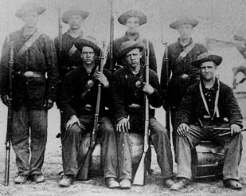

Week 2: Brothers Divided II
| ||
Questions and Slides for Week 21. Consider the growing sectional crisis from both points of view. As a Southerner, explain how the North is conspiring to deprive you of your liberties. As a Northerner, list the ways in which the Southern slave power is plotting the triumph of slave over five labor. Do you see any way to preserve the Union? 2. Civil War historian Don Fehrenbacher writes "Southern attitudes throughout the Kansas controversy demonstrate the intensely reactive nature of southern sectionalism. That is, the South did not so much respond to the Kansas-Nebraska issue itself as react to the northern response to the issue..." Expand on his remark, using material from your reading and lectures in your answer. 3. Many historians pinpoint slavery as the major cause of the Civil War. Do you agree or disagree and why? If there had been no slavery, would the Civil War have occurred over the issue of states' rights?
Stephen A. Douglas John Brown | ||
|
|
 |
| These soldiers of the Tenth Massachusetts Volunteer infantry hold the 1853 Enfield rifle. Imported from England, some 50,000 were purchased between 1861 (when this picture was taken) and the end of 1863. The four-button sack coat prevails as do 'mud-colored' slouch hats (so described in the regimental history. |